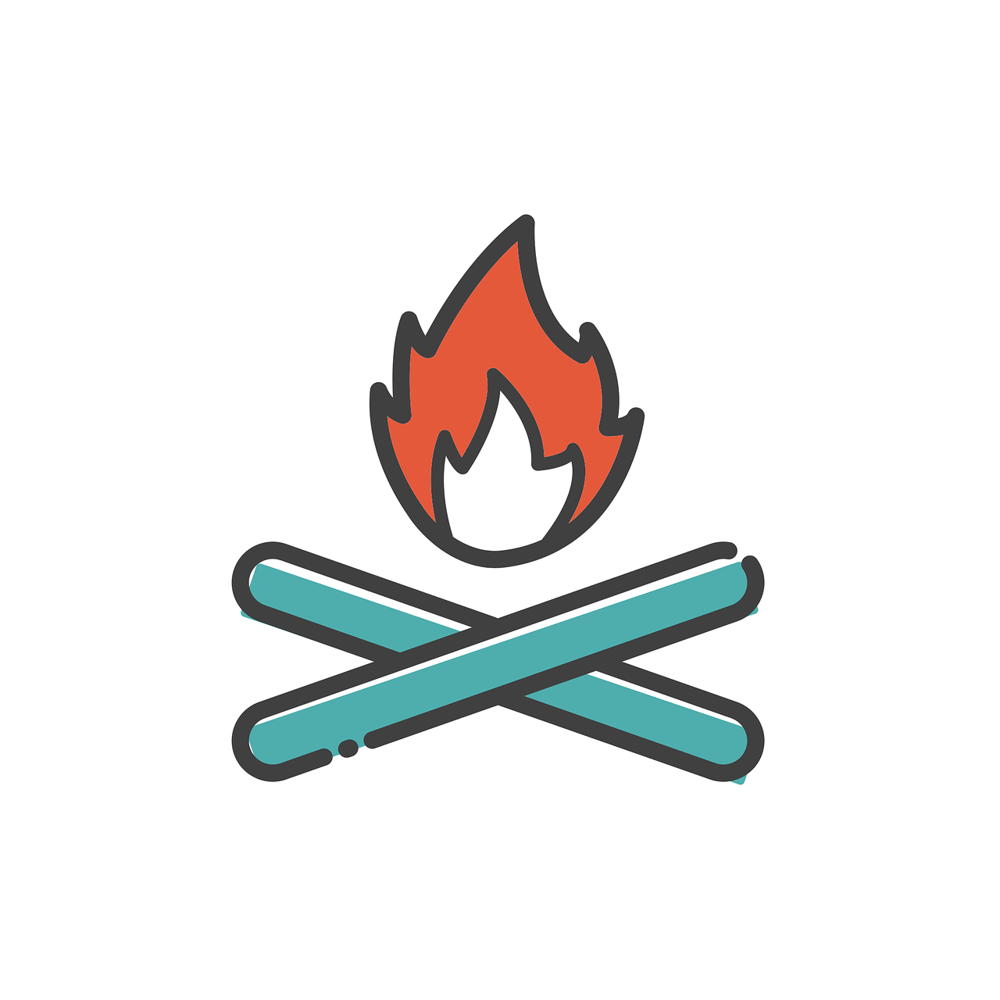

It's finally time!!
So, what's next? A brief Roadmap:
- Invites go out in 2-4 hours to those who have filled out the Team Sign-up form
- Find your team: Discover what team you've been paired with in this link
- Join your teams chat on Discord: Login to w3develops discord server, and join your teams chat channel (go to the bottom of the column that says W3DEVELOPS above it, scroll to the bottom until you see COHORTS *click it*, then find your team chat and introduce yourself). Find your team number in the link in step 1 above. Furthermore, do not forget to add your intros to the intro channel. Here's the link
- Sign the Builder's Pledge: If you haven't filled this form out yet, no worries you can still do so! If you're worried it didn't go through, check for the submission confirmation (it sends you an email confirmation once it has been submitted).
- Any issues you have, please submit a ticket here
-
Brief schedule
- Day 1-5: get comfortable in the Cohort, get to know others, write intro
- Day 5-8: Teams launch: Team launch depends on when the above form submissions come in. It will likely be on Saturday or Sunday and we will post exact details in the #news channel as soon as we know.
- Before the teams are launched this weekend, please read through the Cohort Handbook
-
Finally, here's a quote from the legendary P1xt (creator of the P1xt Study Guides) on projects:
"Pro tip regarding the build-to-learn projects:
There is, quite literally, zero chance that you “know too little”. The only way you can bring your team down is by signing up then not participating. That’s why they’re called “build to learn” projects not “build to show off a bunch of shit I already know” projects.
If something needs to be done and you don’t know how to do it, someone will show or help you, if no one knows how to do it, you work together to learn.
The only way a build to learn project fails is if every single person on the team quits. If you are the only person left trying to build, ask to help you find a new teammate. Some of the absolute best build-to-learn projects I’ve seen coming out of the cohorts got finished because one person refused to quit.
Be that one person who refuses to quit.”
Tips?
- Do *everything* you can do to get Act 1 finished in the first 2 weeks. Building momentum early is important.
- If you don't hear from a team-mate after 3 days, make a ticket. The beginning is crucial and we need to "trim the fat" as quickly as possible.
- Read through the Project Roadmap so you know what to do in each Act & Milestone
- If anytime during the Cohort if you have an issue or are not sure of something, PLEASE make a ticket. If you post your issue in a public channel or DM me with it, I can't guarantee I'll see it. With a ticket, I can.
Crucial to note:
Once the teams are launched, it is up to you and your team to take initiative and make this happen. To help emphasize the importance of taking Extreme Ownership of your project and experience, we say to expect that your team will likely change (lose members, gain members) and it'll be up to you to adapt to succeed.
The W3Develops Cohort is not a MOOC or tutorial where you can go through without much effort. It's a dynamic experience and much more like what you may experience in the real world - navigating team dynamics, motivating yourself and others to contribute, overcoming roadblocks and adapting as needed. Learning on the fly and building both a project and your confidence in what you're capable of!
Note: it is inevitable that some people will come in thinking it is a MOOC and will bail when they realize they have to be accountable. If we work together, we can continually adapt and reorganize to make sure everyone who is fully committed gets to level-up their skills!
“I don’t think there is any substitute for actually having some kind of work experience. It’s the work experience - no matter what the role is — that teaches you about team-work and problem solving and the socialization of work and working with peers and working with other people in order to achieve results.”
-Anthony Impey, CEO of Optimity and Chair of Federation of small business
See you soon!
Jonathan
Star W3develops on GitHub here and subscribe to us on YouTube here.
Email coded by Patrick Perkins as part of w3develops learning group 1.
|